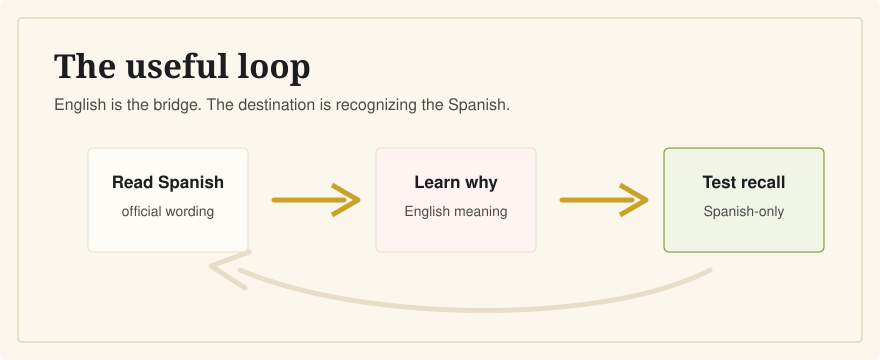

My Experience Preparing for the CCSE
Last verified: June 5, 2026
The biggest lesson from preparing for the CCSE as an English speaker is simple: translations help, but explanations are what make the material stick.

The CCSE is not hard because it is deep. It is hard when you are trying to connect Spanish civic vocabulary with institutions and concepts you may only understand in English. The study routine that works best is: official materials first, bilingual understanding second, timed Spanish practice last.
What Surprised Me
The questions are short, and the official pass mark is reachable. But the Spanish wording can make simple ideas feel slippery. A question about the Head of State, Parliament, a province, or a public service is easy when you understand the concept. It is much harder when you are matching shapes of words under time pressure.
What Helped Most
The official Instituto Cervantes materials are the right starting point because they define the exam, the format, and the current question set. But for English speakers, I found the useful study moment was not just seeing the correct answer. It was reading why the answer made sense, then going back to the Spanish and recognizing the idea there.
That is the study pattern behind CCSE English: Spanish first, English for meaning, then Spanish again. The goal is not to avoid Spanish. The goal is to stop treating Spanish as a wall.
What Did Not Help
- Memorizing answer letters without reading the question.
- Studying only in English and hoping the Spanish will feel familiar later.
- Waiting until the final days to try a timed 25-question mock exam.
- Ignoring repeated vocabulary like derechos, deberes, Gobierno, and municipio.
The Routine I Recommend
Start with the official exam format. Then move through the question bank in short sessions. When you miss a question, do not only mark the right answer; write down the concept. In the final stretch, practice in the real format: 25 questions, 45 minutes, Spanish visible, no hints.
That final Spanish-only step matters because the official CCSE exam itself is in Spanish. English is the bridge, not the destination.
Where CCSE English Fits
CCSE English is an independent study app for English-speaking residents in Spain. It is not affiliated with Instituto Cervantes or the Spanish government. It exists because many learners do not need more noise; they need the official Spanish material made understandable enough to remember.
Related Guides
- Best CCSE study resources for English speakers
- Do I need Spanish to pass the CCSE?
- How long should I study for the CCSE?
- How hard is the CCSE?
Sources
- Instituto Cervantes: CCSE format, language, and scoring
- Instituto Cervantes: official CCSE preparation materials
- Instituto Cervantes: 2026 CCSE manual publication
Learn with Spanish and English side by side, then test yourself in the official 25-question format.